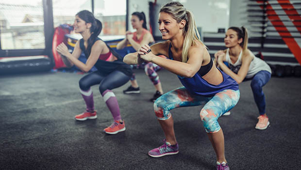

5 Fitness Trends for 2019
Fitness fads come and go. But what about the trends that seem to stick around longer and end up becoming staples? What makes them stand the test of time? Why do we give the thumbs up to these innovations but not others?
Annually, the editors of ACSM's Health & Fitness Journal® (FIT) publish the results from a worldwide survey of the 20 most popular fitness innovations and trends that are worth checking out. We chose five and asked two top fitness trainers to share their thoughts on why these fitness trends made the list for 2019.
Wearable Technology
Take a look around your workplace or fitness facility. It's likely that a lot of people are sporting some type of wearable technology, which explains why this trend sits at the top of the list. From smartwatches and fitness trackers to heart rate monitors and GPS devices, wearable technology is going to be with us for a long time. One reason they're a trend worth trying? Wearable technology allows you to set goals according to your needs, which iFit trainer Mecayla Froerer says takes the guessing out of the equation and helps you see the data that is relevant specifically to you. Lindsey Corak, Group Training Coordinator with Life Time, says another reason these tools are worth trying is they allow you to track metrics and smaller achievements (i.e. 10,000 steps per day), which helps keep you motivated and on track for your bigger achievements—not to mention the heart rate feature that comes with heart rate monitors and many of the watches. Corak says this helps you accurately measure your work output to make sure you are training efficiently.Group Training
If you like the energy that comes from working out with other people, this trend is for you. Instructors or personal trainers lead group exercise classes with the goal of making the workout safe, effective and motivational, which Corak says helps us connect with like-minded people. "Working out in a group of people gives us a sense of community," she says. When you integrate people into your life and routine that have the same goals as you, you're more likely to stay motivated and accountable for your workouts. Group training classes range from boot camp style and indoor cycling to dance-based or cardio classes.High-Intensity Interval Training (HIIT)
When you find yourself with a limited amount of time to exercise, do you skip it or maximize the time you have? The good news is, you don't have to choose. With high-intensity interval training (HIIT), you can get an effective and efficient workout done in as little as 20 minutes.Hiring a Personal Trainer
Mobile Exercise Apps One of the most popular trends right now is online workout videos and apps. They are easy to access (all you need is a smartphone, tablet or computer) and many of them are free. Plus, mobile exercise apps target the No. 1 reason many of us skip a workout: time. "Not everyone has time in their day to get to a gym, find child care and or make it to a class," Froerer says. "Streaming workouts is a great way to get one in from the comfort of your own home while saving you time and stress," she adds. And the best part? You can find just about any type of workout on one of these apps—from indoor or outdoor running and cycling to yoga, strength training and HIIT classes.Why is physical activity so important for health and wellbeing?
There are so many reasons why regular activity boosts your health. Read to learn what those are and how you can incorporate exercise into your day. We know that staying active is one of the best ways to keep our bodies healthy. But did you know it can also improve your overall well-being and quality of life?